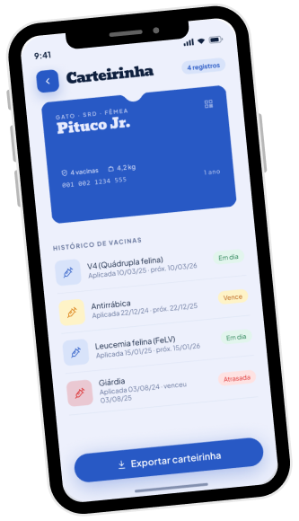
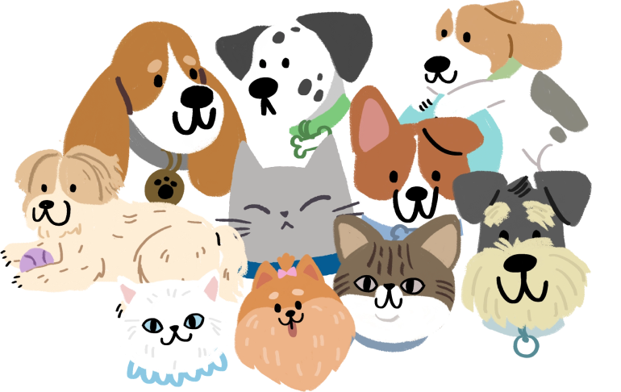
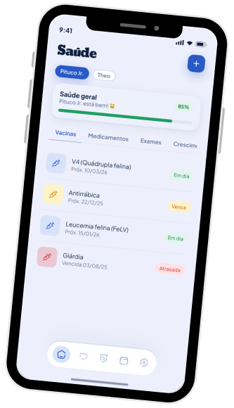
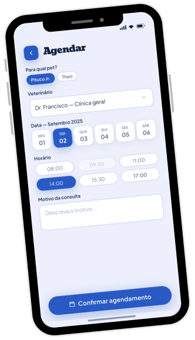
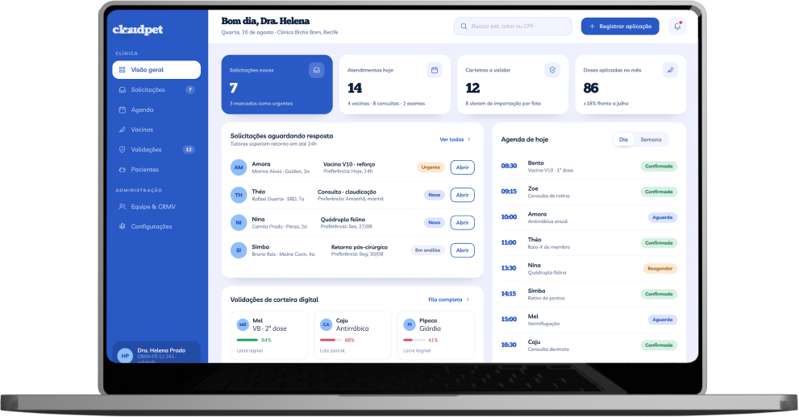
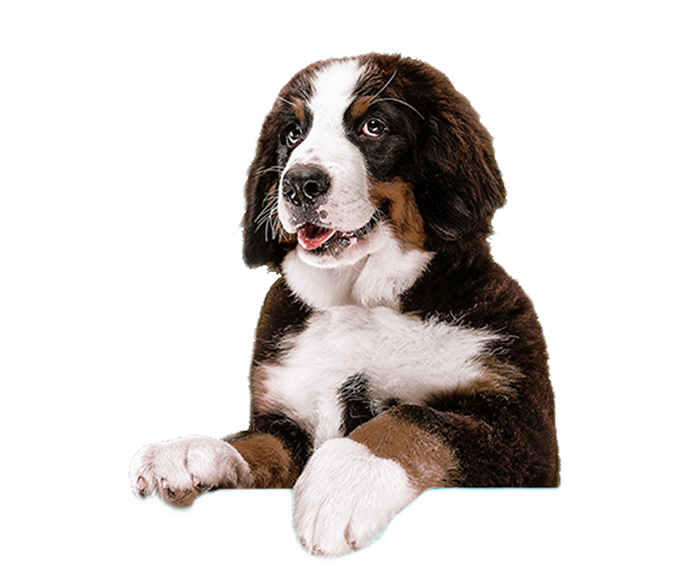

Carteirinha digital
Registro de todas as vacinas, com lote, data e veterinário responsável. O cloudpet avisa quando o próximo reforço estiver chegando.
Menos papelada.
Mais patinhas.

Vacinas, exames e consultas organizados na nuvem, sempre à mão quando você precisar.

Registro de todas as vacinas, com lote, data e veterinário responsável. O cloudpet avisa quando o próximo reforço estiver chegando.

Exames, receitas, laudos e atestados guardados na nuvem. Encontre qualquer arquivo em segundos e compartilhe com a clínica.

Consultas, banho e tosa e vacinação numa agenda só, com lembretes para você não perder nenhum horário.
Painel para veterinários registrarem atendimentos, gerenciarem a agenda e enviarem documentos direto para o app do tutor.

Nome, espécie, raça e foto. Em poucos minutos o perfil está pronto.
Fotografe vacinas e exames antigos ou receba direto da clínica parceira.
Lembretes, agenda e documentos sempre atualizados, no celular ou no computador.
O CloudPet surgiu em 2026, como um projeto acadêmico desenvolvido por estudantes da Universidade Federal do Oeste do Pará (UFOPA).
A ideia nasceu da necessidade de modernizar o acompanhamento da saúde animal, reduzindo a dependência de registros físicos e facilitando o acesso às informações dos pets.
Cuidar do pet já dá trabalho suficiente. O app tem que ser fácil.
Tutor e veterinário vendo a mesma informação, na hora certa.
Os dados do seu pet são tratados com o mesmo carinho que ele.
